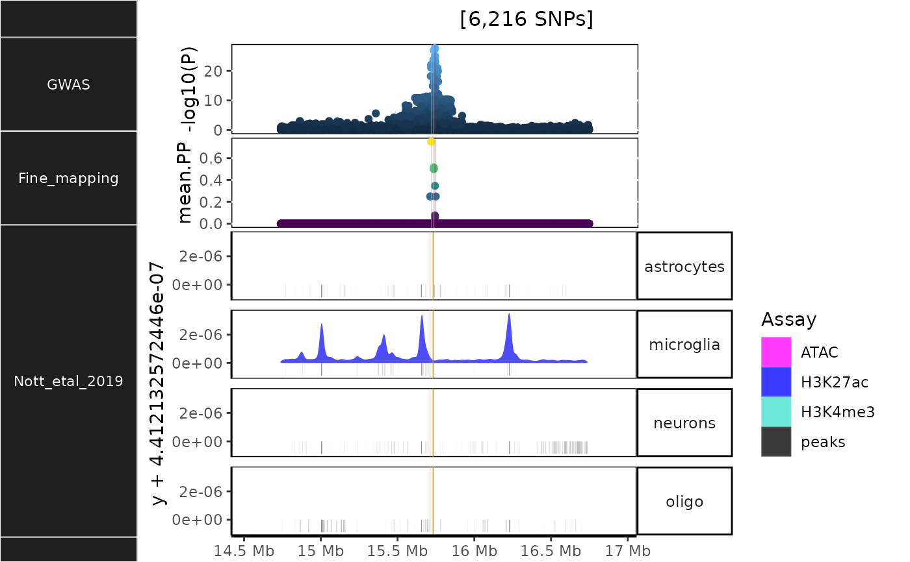

R/NOTT2019_epigenomic_histograms.R
NOTT2019_epigenomic_histograms.RdBrain cell-specific epigenomic data from Nott et al. (2019).
NOTT2019_epigenomic_histograms(
dat,
bigwig_metadata = echoannot::NOTT2019_bigwig_metadata,
locus_dir = tempdir(),
show_plot = TRUE,
save_plot = FALSE,
full_data = TRUE,
return_assay_track = FALSE,
binwidth = 200,
density_adjust = 0.2,
zoom = "1x",
strip.text.y.angle = 90,
xtext = TRUE,
geom = "density",
plot_formula = "Cell_type ~.",
fill_var = "Assay",
genomic_units = "Mb",
as_ggplot = TRUE,
dpi = 300,
height = 15,
width = 8,
nThread = 1,
save_annot = FALSE,
verbose = TRUE
)Fine-mapping results data from finemap_loci.
Metadata table with at least the following two columns:
"name"Unique name of the file.
"data_link"URL to UCSC genome browser bigwig file.
Locus-specific directory.
Show plot.
Whether to save the plot.
Whether to download the full data
(genomic ranges of all sequence reads) as opposed
to a reduced representation of the data as a single vector
(i.e. the aggregated reads "score").
Setting full_data=TRUE is necessary for creating
histograms and density plots.
Return only the assay track (before adding the rest of the tracks and showing the plot).
width of the bins.
Passed to adjust argument in
geom_density.
Zoom into the center of the locus when plotting (without editing the fine-mapping results file). You can provide either:
The size of your plot window in terms of basepairs
(e.g. zoom=50000 for a 50kb window).
How much you want to zoom in (e.g. zoom="1x"
for the full locus, zoom="2x"
for 2x zoom into the center of the locus, etc.).
You can pass a list of window sizes (e.g. c(50000,100000,500000))
to automatically generate
multiple views of each locus.
This can even be a mix of different style inputs: e.g.
c("1x","4.5x",25000).
Angle of the y-axis facet labels.
Whether to include x-axis title and text.
Geom to use (Single character for now). Please see section Geometry for details.
Formula passed to facets argument in
facet_grid.
Variable name to use for plot fill argument.
Which genomic units to return window limits in.
Return plot as ggplot2
(TRUE) or Tracks (FALSE) object.
dpi to use for raster graphics
height (defaults to the height of current plotting window)
width (defaults to the width of current plotting window)
Number of threads to parallelise downloads across.
Save the queried subset of bigwig annotations.
Print messages.
Other NOTT2019:
NOTT2019_bigwig_metadata,
NOTT2019_get_epigenomic_peaks(),
NOTT2019_get_interactions(),
NOTT2019_get_interactome(),
NOTT2019_get_promoter_celltypes(),
NOTT2019_get_promoter_interactome_data(),
NOTT2019_get_regulatory_regions(),
NOTT2019_plac_seq_plot(),
NOTT2019_superenhancers(),
get_NOTT2019_interactome(),
get_NOTT2019_superenhancer_interactome()
nott2019_track <- echoannot::NOTT2019_epigenomic_histograms(
dat = echodata::BST1,
bigwig_metadata = echoannot::NOTT2019_bigwig_metadata[1:2,])
#> NOTT2019:: Creating epigenomic histograms plot
#> + Inferring genomic limits for window: 1x
#> Constructing GRanges query using min/max ranges across one or more chromosomes.
#> Downloading data from UCSC.
#> Importing... [1] exvivo_H3K27ac_tbp
#> Importing previously downloaded files: /github/home/.cache/R/echoannot/NOTT2019_epigenomic_peaks.rds
#> ++ NOTT2019:: 634,540 ranges retrieved.
#> dat is already a GRanges object.
#> 510 query SNP(s) detected with reference overlap.
#> + Calculating max histogram height
#> + Converting label units to Mb.
#> using coord:genome to parse x scale
#> using coord:genome to parse x scale
#> Warning: longer object length is not a multiple of shorter object length
#> Found more than one class "simpleUnit" in cache; using the first, from namespace 'hexbin'
#> Also defined by 'ggbio'
#> Found more than one class "unit" in cache; using the first, from namespace 'hexbin'
#> Also defined by 'ggbio'
